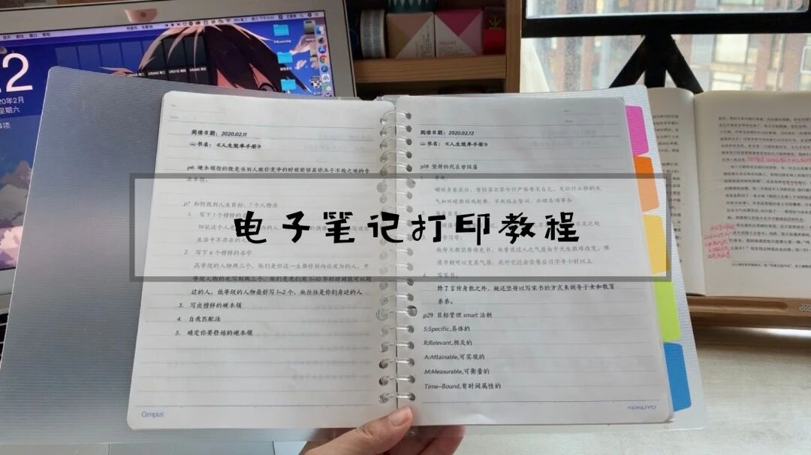

攻略｜超简单打印活页电子笔记！
和 你 一 起 治 愈 生 活

图：@秋秋
文：@秋秋
大家好，又见面了～
我是秋秋。虽然不常更新，但是每一篇wo 都很认真，也希望大家看完我的文章能收获一点点～（不是一点点奶茶🥤/..)
视频抢先版：
正文开始：
前一段时间因为疫情的原因我买了许多书，本想着看完后把笔记整理出来，但是一看到满书的横线顿时失去动力。
还好，经过我一个星期的探索，终于能够在活页本上自由的打印笔记！

（✨看看，是不是非常整洁）
所以，如果你也和我一样很想记笔记！但是又想用更高效的办法！那就继续看下去吧！

1.我的记笔记策略
在正式开始教大家怎么打印电子笔记之前，我先大致介绍一下我读书情况。
（1）我实体书和电子书都看，最近以实体书为主，所以把实体书做成电子版打印我很有经验。
（2）我看书的时候喜欢边看边划线。
（3）看书的时候我会用绿色的便利贴标记非常重要的地方。
（4）我看书的时候会标记页码，每天看之前就会写下日期。
所以看完之后，我的书大概是这个样子。

非常杂乱：）
2.我的笔记整理术
所以整理笔记的第一步，是把书上的精华同步到电脑。
我用的这个方法真的是非常高效！不仅能够帮你每天快速复习，加深记忆。而且识别效率非常高。
用到的软件就是这个——讯飞语记

每天我都按着页码，在这个app上朗读我划线的句子，识别率99.9%。之后通过微信发给自己。

其实我觉得朗读就是一个记忆的过程，大声朗读一遍的记忆效果并不会比抄写一遍差很多。（就是每晚大声朗读有点怪怪的.....)

(👆这些都是语音识别的，超赞）
3. 打印活页笔记设置
之后把内容复制到word，开始排版，我会按照日期标记好每天读的内容，排版后这个样子：

然后开始设置打印机属性🖨️，主要是：
页边距
A5尺寸
行间距23磅
我用的A5大小（国誉），页边距设置下图：

选择大小为A5尺寸

行间距是23磅（对应纸张8mm)

打印还是用我的小红箱（佳能mg3680)
这里只要把打印的纸换成国誉的活页就可以了～

（打印出来那一刻超激动）
现在我每天看书都感觉特别有动力，想着自己看完之后一起打印出来，就很快乐！
当然，打印电子版的读书笔记并不是说自己懒不想动手，事实上我每天都写复盘还有总结。


而是我觉得这样打印出来效率很高，不会有看完书害怕整理，而且朗读比用手抄写一遍对我来说记忆效果更好！
希望这个方法也能帮助到你。
下次有机会分享我最近读的理财书还有理财的小心得（因为一年理财的收益刚好过万了）

如果大家有什么想问的或者是想看的都可以评论留言给我～
虽然我更新的不频繁，但是尽量保证每一篇都很用心，大家能真的从里面获取能量！（所以别着急取关哈哈～）
其他文章推荐：

原创文章，转载请告知本人并标注来源
工作联系：17865514429 （微信）
请注明来意 :)
@微博：秋秋一日甜
喜欢记得星标，让我们一起成长